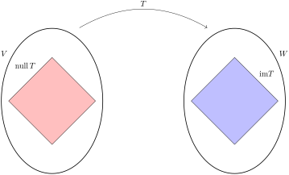
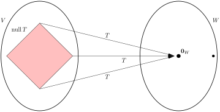
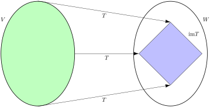

Having introduced linear transformations, we now treat them as proper objects of study. Forget for a moment the linear algebraic nature of a linear transformation \(T\colon V\rightarrow W\text{,}\) and think of it just as a function. Purely along function-theoretic lines, we want to know whether \(T\) is injective, surjective, and invertible. As we will learn, there are two subspaces associated to a linear transformation \(T\text{,}\) its null space and image, that provide an easy way for answering these questions. We will also see that in the case of a matrix transformation \(T_A\text{,}\) these associated spaces coincide with two of the fundamental spaces of the matrix \(A\text{.}\) (You can probably guess one of these.)
Subsection5.2.1Null space and image
Definition5.2.1.Null space and image.
Let \(T\colon V\rightarrow W\) be a linear transformation.
Null space.
The null space of \(T\text{,}\) denoted \(\NS T\text{,}\) is defined as
The image (or range) of \(T\text{,}\) denoted \(\im T\text{,}\) is defined as
\begin{equation*}
\im T=\{\boldw\in W\colon \boldw=T(\boldv) \text{ for some } \boldv\in V \}\text{.}
\end{equation*}
As with the fundamental spaces of a matrix, given a linear transformation \(T\colon V\rightarrow W\) it is helpful to keep straight the different ambient spaces where \(\NS T\) and \(\im T\) live. As illustrated by Figure 5.2.(a), we have \(\NS T\subseteq V\) and \(\im T\subseteq W\text{:}\) that is, the null space is a subset of the domain of \(T\text{,}\) and the image is a subset of the codomain. Figures 5.2.(b)and 5.2.(c) go on to convey that \(\NS T\) is the set of elements of \(V\) that are mapped to \(\boldzero_W\text{,}\) and that \(\im T\) is the set of outputs of \(T\text{.}\)
(a)Null space lives in the domain; image lives in the codomain.
(b)The entire null space gets mapped to \(\boldzero_W\text{.}\)
(c)The entire domain is mapped to \(\im T\text{.}\)
Figure5.2.2.Null space and image
As mentioned at the top, the null space and image of a linear transformation are subspaces, as we now show.
Theorem5.2.3.Null space and image.
If \(T\colon V\rightarrow W\) is a linear transformation, then \(\NS T\) is a subspace of \(V\text{,}\) and \(\im T\) is a subspace of \(W\text{.}\)
Proof.
Null space of \(T\).
We use the two-step technique to prove \(\NS T\) is a subspace.
Since \(T(\boldzero_V)=\boldzero_W\) (Theorem 3.2.12), we see that \(\boldzero_V\in \NS T\text{.}\)
Suppose \(\boldv_1, \boldv_2\in \NS T\text{.}\) Given any \(c,d\in \R\text{,}\) we have
This shows that \(c\boldv_1+d\boldv_2\in \NS T\text{,}\) completing our proof.
Image of \(T\).
The proof proceeds in a similar manner, using the two-step technique.
Since \(T(\boldzero_V)=\boldzero_W\) (Theorem 3.2.12), we see that \(\boldzero_W\) is “hit” by \(T\text{,}\) and hence is a member of \(\im T\text{.}\)
Assume vectors \(\boldw_1, \boldw_2\in W\) are elements of \(\im T\text{.}\) By definition, this means there are vectors \(\boldv_1, \boldv_2\in V\) such that \(T(\boldv_i)=\boldw_i\) for \(1\leq i\leq 2\text{.}\) Now given any linear combination \(\boldw=c\boldw_1+d\boldw_2\text{,}\) we have
This shows that for any linear combination \(\boldw=c\boldw_1+d\boldw_2\text{,}\) there is an element \(\boldv=c\boldv_1+d\boldv_2\) such that \(T(\boldv)=\boldw\text{.}\) We conclude that if \(\boldw_1, \boldw_2\in \im T\text{,}\) then \(\boldw=c\boldw_1+d\boldw_2\in \im T\) for any \(c,d\in \R\text{,}\) as desired.
Example5.2.4.
Define \(F\colon M_{nn}\rightarrow M_{nn}\) as \(F(A)=A^T-A\text{.}\)
Prove that \(F\) is linear.
Identify \(\NS F\) as a familiar matrix subspace.
Identify \(\im S\) as a familiar matrix subspace.
Solution.
Linearity is an easy consequence of transpose properties. For any \(A_1, A_2\in M_{nn}\) and \(c_1,c_2\in \R\text{,}\) we have
Thus \(\NS F\) is the subspace of symmetric \(n\times n\) matrices!
Let \(W=\{B\in M_{nn}\colon B^T=-B\}\text{,}\) subspace of skew-symmetric \(n\times n\) matrices. We claim \(\im F=W\text{.}\) As this is a set equality, we prove it by showing the two set inclusions \(\im F\subseteq W\) and \(W\subseteq \im F\text{.}\) (See Basic set properties)
The inclusion \(\im F\subseteq W\) is the easier of the two. If \(B\in \im F\text{,}\) then \(B=F(A)=A^T-A\) for some \(A\in M_{nn}\text{.}\) Using various properties of transposition, we have
showing that \(B\) is skew-symmetric, and thus \(B\in W\text{,}\) as desired.
The inclusion \(W\subseteq \im F\) is trickier: we must show that if \(B\) is skew-symmetric, then there is an \(A\) such that \(B=F(A)=A^T-A\text{.}\) Assume we have a \(B\) with \(B^T=-B\text{.}\) Letting \(A=-\frac{1}{2}B\) we have
Thus we have found a matrix \(A\) satisfying \(F(A)=B\text{.}\) It follows that \(B\in\im T\text{.}\)
Remark5.2.5.Subspace as null space.
As illustrated by Example 5.2.4, Theorem 5.2.3 provides an alternative technique for proving that a subset of \(W\subseteq V\) is in fact a subspace: namely, find a linear transformation \(T\colon V\rightarrow Z\) such that \(W=\NS T\text{.}\)
Not surprisingly, there is a connection between the null space of a matrix, as defined in Definition 4.1.10, and our new notion of null space. Indeed, given an \(m\times n\) matrix \(A\text{,}\) for all \(\boldx\in \R^n\) we have
and let \(T_A\colon \R^4\rightarrow \R^2\) be its associated matrix transformation. Provide bases for \(\NS T_A\) and \(\im T_A\) and compute the dimensions of these spaces.
Solution.
We have \(\NS T_A=\NS A\) and \(\im T_A=\CS A\text{.}\) Following Procedure 4.5.10, we first row reduce \(A\) to
The rank-nullity theorem relates the the dimensions of the null space and image of a linear transformation \(T\colon V\rightarrow W\text{,}\) assuming \(V\) is finite dimensional. Roughly speaking, it says that the bigger the null space, the smaller the image. More precisely, it tells us that
As we will see, this elegant result can be used to significantly simplify computations with linear transformations. For example, in a situation where we wish to compute explicitly both the null space and image of a given linear transformation, we can often get away with just computing one of the two spaces and using the rank-nullity theorem (and a dimension argument) to easily determine the other. Additionally, the rank-nullity theorem will directly imply some intuitively obvious properties of linear transformations. For example, suppose \(V\) is a finite-dimensional vector space. It seems obvious that if \(\dim W> \dim V\text{,}\) then there is no linear transformation mapping \(V\) surjectively onto \(W\text{:}\) i.e., you should not be able to map a “smaller” vector space onto a “bigger” one. Similarly, if \(\dim W \lt \dim V\text{,}\) then we expect that there is no injective linear transformation mapping \(V\) injectively into \(W\text{.}\) Both these results are easy consequences of the rank-nullity theorem.
Before proving the theorem we give names to \(\dim \NS T\) and \(\dim\im T\text{.}\)
Definition5.2.8.Rank and nullity.
Let \(T\colon V\rightarrow W\) be a linear transformation.
The rank of \(T\text{,}\) denoted \(\rank T\text{,}\) is the dimension of \(\im T\text{:}\) i.e.,
Choose a basis \(B'=\{\boldv_1, \boldv_2, \dots, \boldv_k\}\) of \(\NS T\) and extend \(B'\) to a basis \(B=\{\boldv_1, \boldv_2,\dots, \boldv_k,\boldv_{k+1},\dots, \boldv_n\}\text{,}\) using Theorem 4.4.15. Observe that \(\dim\NS T=\nullity T=k\) and \(\dim V=n\text{.}\)
We claim that \(B''=\{T(\boldv_{k+1}),T(\boldv_{k+2}),\dots, T(\boldv_{n})\}\) is a basis of \(\im T\text{.}\)
Proof of claim.
\(B''\) is linearly independent.
Suppose \(a_kT(\boldv_k)+a_{k+1}T(\boldv_{k+1})+\cdots +a_nT(\boldv_n)=\boldzero\text{.}\) Then the vector \(\boldv=a_k\boldv_k+a_{k+1}\boldv_{k+1}+\cdots +a_n\boldv_n\) satisfies \(T(\boldv)=\boldzero\) (using linearity of \(T\)), and hence \(\boldv\in \NS T\text{.}\) Then, using the fact that \(B'\) is a basis of \(\NS T\text{,}\) we have
Since the set \(B\) is linearly independent, we conclude that \(b_i=a_j=0\) for all \(1\leq i\leq k\) and \(k+1\leq j\leq n\text{.}\) In particular, \(a_{k+1}=a_{k+2}=\cdots=a_n=0\text{,}\) as desired.
\(B''\) spans \(\im T\).
It is clear that \(\Span B''\subseteq \im T\) since \(T(\boldv_i)\in \im T\) for all \(k+1\leq i\leq n\) and \(\im T\) is closed under linear combinations.
For the other direction, suppose \(\boldw\in \im T\text{.}\) Then there is a \(\boldv\in V\) such that \(\boldw=T(\boldv)\text{.}\) Since \(B\) is a basis of \(V\) we may write
Here the parametric description is obtained using our usual technique for solving systems of equations (Procedure 2.3.6). From the parametric description, it is clear that the set \(B=\{(-1,1,0), (-1,0,1)\}\) spans \(\NS T\text{.}\) Since \(B\) is clearly linearly independent, it is a basis for \(\NS T\text{,}\) and we conclude that \(\dim \NS=\val{B}=2\text{.}\) (Alternatively, the equation \(x+y+z=0\) defines a plane passing through the origin in \(\R^3\text{,}\) and we know such subspaces are of dimension two. )
Next it is fairly clearly that \(\im T=\{(t,t)\colon t\in \R\}=\Span\{(1,1)\}\text{.}\) Thus \(B'=\{(1,1)\}\) is a basis for \(\im T\) and \(\dim\im T=\val{B'}=1\text{.}\)
Since \(\im T\subseteq \R^3\) and \(\dim\im T=\dim \R^3=3\text{,}\) we conclude by Corollary 4.4.17 that \(\im T=\R^3\text{.}\) Thus \(T\) is surjective.
Subsection5.2.3Injective and surjective linear transformations
Recall the notions of injectivity and surjectivity from Definition 0.2.7: a function \(f\colon X\rightarrow Y\) is injective (or one-to-one) if for all \(x,x'\in X\) we have \(f(x)=f(x')\) implies \(x=x'\text{;}\) it is surjective (or onto) if for all \(y\in Y\) there is an \(x\in X\) with \(f(x)=y\text{.}\) As with all functions, we will be interested to know whether a given linear transformation is injective or surjective; as it turns out, the concepts of null space and image give us a convenient manner of answering these questions. As remarked in Definition 0.2.7, there is in general a direct connection between the surjectivity and the image of a function: namely, \(f\colon X\rightarrow Y\) is surjective if and only if \(\im f=Y\text{.}\) It follows immediately that a linear transformation \(T\colon V\rightarrow W\) is surjective if and only if \(\im T=W\text{.}\) As for injectivity, it is relatively easy to see that if a linear transformation \(T\) is injective, then its null space must consist of just the zero vector of \(V\text{.}\) What is somewhat surprising is that the converse is also true, as described in (2) of the theorem below.
Theorem5.2.12.Injectivity and surjectivity.
Let \(T\colon V\rightarrow W\) be a linear transformation.
\(T\) is injective if and only if \(\NS T=\{\boldzero_V\}\text{.}\)
\(T\) is surjective if and only if \(\im T=W\text{.}\)
Proof.
We have
\begin{align*}
T(\boldv)=T(\boldv') \amp \iff T(\boldv')-T(\boldv)=\boldzero\\
\amp \iff T(\boldv'-\boldv)=\boldzero \amp (T \text{ is linear})\\
\amp \iff \boldu=\boldv'-\boldv\in\NS T \amp (\text{def. } \NS T)\\
\amp \iff \boldv'=\boldv+\boldu \text{ for some } \boldu\in\NS T \text{.}
\end{align*}
Equation [cross-reference to target(s) "eq_nullspace_inverseimage" missing or not unique] follows directly from [cross-reference to target(s) "eq_nullspace_injective" missing or not unique] by observing that if \(T(\boldv)=\boldw\text{,}\) then \(T(\boldv')=\boldw\) if and only if \(T(\boldv)=T(\boldv')\text{.}\)
According to [cross-reference to target(s) "eq_nullspace_injective" missing or not unique] we have \(T(\boldv)=T(\boldv')\) if and only if \(\boldv'=\boldv+\boldu\) for some \(\boldu\in \NS T\text{.}\)
If \(\NS T=\{\boldzero_V\}\text{,}\) then \(T(\boldv)=T(\boldv')\) implies \(\boldv'=\boldv+\boldzero=\boldv\text{.}\) Thus \(T\) is injective in this case.
Conversely, if \(\NS T\ne \{\boldzero_V\}\) we can find a nonzero \(\boldu\in \NS T\text{.}\) It follows that for any\(\boldv\in V\) we have \(T(\boldv)=T(\boldv+\boldu)\text{.}\) Furthermore, since \(\boldu\ne\boldzero_V\text{,}\) we have \(\boldv\ne \boldv+\boldu\text{.}\) Thus \(T\) is not injective in this case.
Remark5.2.13.
To determine whether a function of sets \(f\colon X\rightarrow Y\) is injective, we normally have to show that for each output \(y\) in the image of \(f\) there is exactly one input \(x\) satisfying \(f(x)=y\text{.}\) Think of this as checking injectivity at every output. Theorem 5.2.12 tells us that in the special case of a linear transformation \(T\colon V\rightarrow W\) it is enough to check injectivity at exactly one ouput: namely, \(\boldzero\in W\text{.}\)
Corollary5.2.14.
Let \(T\colon V\rightarrow W\) be a linear transformation, and suppose \(V\) is finite dimensional.
If \(\dim V > \dim W\text{,}\) then \(T\) is not injective.
If \(\dim V < \dim W\text{,}\) then \(T\) is not surjective.
The following statements are equivalent.
\(T\) is bijective.
\(\dim V=\dim W\) and \(\NS T=\{\boldzero\}\text{.}\)
\(\dim V=\dim W\) and \(\im T=\dim W\text{.}\)
Definition5.2.15.Isomorphism.
Let \(V\) and \(W\) be vector spaces. An isomorphism from \(V\) to \(W\) is a bijective linear transformation \(T\colon V\rightarrow W\text{.}\) Vector spaces \(V\) and \(W\) are isomorphic if there is an isomorphism from \(V\) to \(W\text{.}\)
Remark5.2.16.Proving \(T\) is an isomorphism.
According to Definition 5.2.15, to prove a function \(T\colon V\rightarrow W\) is an isomorphism, we must show that
\(T\) is linear, and
\(T\) is invertible.
Since being invertible is equivalent to being bijective, there are two main approaches to proving that (ii) holds for a linear transformation \(T\colon V\rightarrow W\text{:}\)
we can show directly that \(T\) is invertible by providing an inverse \(T^{-1}\colon W\rightarrow V\text{;}\)
we can show that \(T\) is bijective (i.e., injective and surjective).
Which approach, (a) or (b), is more convenient depends on the linear transformation \(T\) in question.
Remark5.2.17.Inverse of isomorphism is an isomorphism.
Let \(T\colon V\rightarrow W\) be an isomorphism. Since \(T\) is invertible, there is an inverse function \(T^{-1}\colon W\rightarrow V\text{.}\) Not surprisingly, \(T^{-1}\) is itself a linear transformation, though of course this requires proof. (See [provisional cross-reference: ex_isomorphism_inverse].) Since \(T^{-1}\) is also invertible (\(T\) is its inverse), it follows that \(T^{-1}\) is itself an isomorphism.
Theorem5.2.18.Isomorphism equivalence.
Let \(T\colon V\rightarrow W\) be a linear transformation. The following are equivalent.
\(T\) is an isomorphism;
\(\NS T=\{\boldzero_V\}\) and \(\im T=W\text{.}\)
We mentioned in the introduction that two isomorphic vector spaces are, for all linear algebraic intents and purposes, essentially the same thing. The next theorem provides some evidence for this claim. It also illustrates how a given isomorphism \(T\colon V\rightarrow W\) can translate back and forth between two isomorphic vector spaces. Recall (Definition 0.2.6) that for a subset \(S\subseteq V\text{,}\) the image \(T(S)\) of \(S\) under \(T\) is the set
\begin{equation*}
T(S)=\{\boldw\in W\colon \boldw=T(\boldv) \text{ for some } \boldv\in S\}=\{T(\boldv)\colon \boldv\in S\}\text{.}
\end{equation*}
Theorem5.2.19.Properties preserved by isomorphisms.
Let \(T\colon V\rightarrow W\) be an isomorphism. The following properties hold:
\(S\subseteq V\) is linearly independent if and only if \(T(S)\subseteq W\) is linearly independent;
\(S\subseteq V\) spans \(V\) if and only if \(T(S)\subseteq W\) spans \(W\text{;}\)
\(S\subseteq V\) is a basis of \(V\) if and only if \(T(S)\subseteq W\) is a basis of \(W\)
\(\dim V=\dim W\text{.}\)
The following omnibus result is useful for deciding whether a linear transformation is an isomorphism, and lists a few of the properties of a vector space that are preserved by isomorphisms: namely, dimension, span, and linear independence.
Theorem5.2.20.Isomorphism compendium.
Let \(T\colon V\rightarrow W\) be a linear transformation.
\(T\) is injective if and only if \(\NS T=\{\boldzero\}.\)
Assume \(T\) is an isomorphism, let \(S\subseteq V\text{,}\) and let \(T(S)=\{T(\boldv)\colon \boldv\in S\}\text{,}\) the set of images of \(S\) under \(T\text{.}\)
The inverse function \(T^{-1}\colon W\rightarrow V\) is a linear transformation.
The set \(S\) spans \(V\) if and only if \(T(S)\) spans \(W\text{.}\)
The set \(S\) is linearly independent if and only if \(T(S)\) is linearly independent.
Assume \(\dim V=n\text{.}\) Then the following are equivalent:
The vector \(\bf{c}\) is in the range of \(T\text{.}\)
???
True
False
The vector \(\bf{b}\) is in the kernel of \(T\text{.}\)
???
True
False
Answer1.
\(\text{True}\)
Answer2.
\(\text{True}\)
Solution.
\(A{\bf b}=\left[\begin{array}{ccc}
5 \amp -1 \amp 13\cr
-2 \amp 0 \amp -6\cr
7 \amp -5 \amp 11
\end{array}\right] \left[\begin{array}{c}-3\\-2\\1\\\end{array}\right]= \left[\begin{array}{c}0\\0\\0\\\end{array}\right] ={\bf 0}\text{,}\) so \({\bf b}\in \ker(T)\text{.}\) Row-reduce to determine a solution of \(A{\bf x}={\bf c}\text{.}\)\(\left[\begin{array}{cccc}
5 \amp -1 \amp 13 \amp -1\cr
-2 \amp 0 \amp -6 \amp 0\cr
7 \amp -5 \amp 11 \amp -5
\end{array}\right] \sim \left[\begin{array}{cccc}
1 \amp 0 \amp 3 \amp 0\cr
0 \amp 1 \amp 2 \amp 1\cr
0 \amp 0 \amp 0 \amp 0
\end{array}\right]\text{.}\) or simply notice that \(\bf{c}\) is the second column of \(\bf{A}\text{.}\) Row reduction shows that the equation \(\bf{A}\bf{x}=\bf{c}\) has infinitely many solutions: \(\bf{x} = \left[\begin{array}{c}0\\1\\0\\\end{array}\right] + t \left[\begin{array}{c}-3\\-2\\1\\\end{array}\right]\) for arbitrary \(t \in \mathbb{R}\text{,}\) and both approaches lead to the conclusion that \(A \left[\begin{array}{c}0\\1\\0\\\end{array}\right] = {\bf c}\text{.}\) Thus \({\bf c}\in\) range\((T)\text{.}\)
3.
If \(T:{\mathbb R}^8\to {\mathbb R}^2\) is a linear transformation, then consider whether the set ker (\(T\) ) is a subspace of \({\mathbb R}^{8}\text{.}\)
Select true or false for each statement. first problem looking at subspaces
This set contains the zero vector and is closed under vector addition and scalar multiplication.
This set is a subspace of \({\mathbb R}^8\)
This set is a subset of the codomain
This set is a subset of the domain.
Solution.
\({\mathbb R}^8\text{,}\) that contains the zero vector, and is closed under vector addition and scalar multiplication.
Define the linear transformation \(T: {\mathbb R}^2 \rightarrow {\mathbb R}^3\) by \(T(\vec{x}) = A\vec{x}\text{.}\) Find a vector \(\vec{x}\) whose image under \(T\) is \(\vec{b}\text{.}\)
\(\vec{x} =\) (2 × 1 array).
Is the vector \(\vec{x}\) unique?
choose
unique
not unique
Answer.
\(\text{unique}\)
Written Exercises
Computing \(\NS T\) and \(\im T\) parametrically.
For each linear transformation \(T\) give parametric descriptions of \(\NS T\) and \(\im T\text{.}\) To do so you will want to relate each computation to a system of linear equations. (See [cross-reference to target(s) "eg_subspace_image" missing or not unique] for an example of computing an image.)
Define \(T\colon P_5\rightarrow \R^3\) as \(T(p(x))=(p(-2), p(3), p(7))\text{:}\) i.e., the value of \(T\) at the input polynomial \(p(x)\in P_5\) is computed by evaluating \(p\) at the inputs \(x=-2,3,7\text{.}\)
Prove: \(T\) is a linear transformation.
Prove: the \(W=\{p(x)\in P_5\colon p(-2)=p(3)=p(7)=0\}\) is a subspace of \(P_5\text{.}\)
Hint.
Use [cross-reference to target(s) "proc_subspace_nullspace" missing or not unique].
Identifying \(W\) as a null space.
For each subset \(W\subseteq V\) show \(W\) is a subspace by identifying it with the null space of a linear transformation \(T\text{.}\) You may use any of the examples from Section 5.1, and any of the results from the exercises in Exercises 5.1.6.